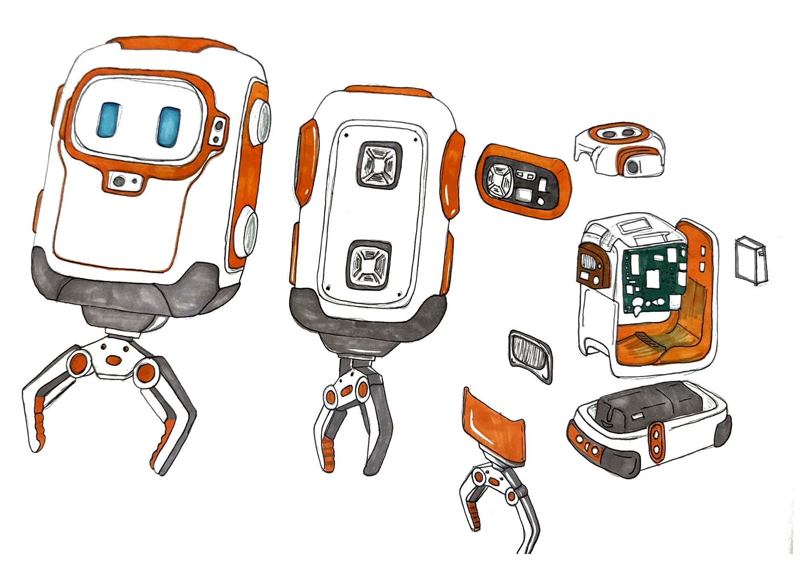
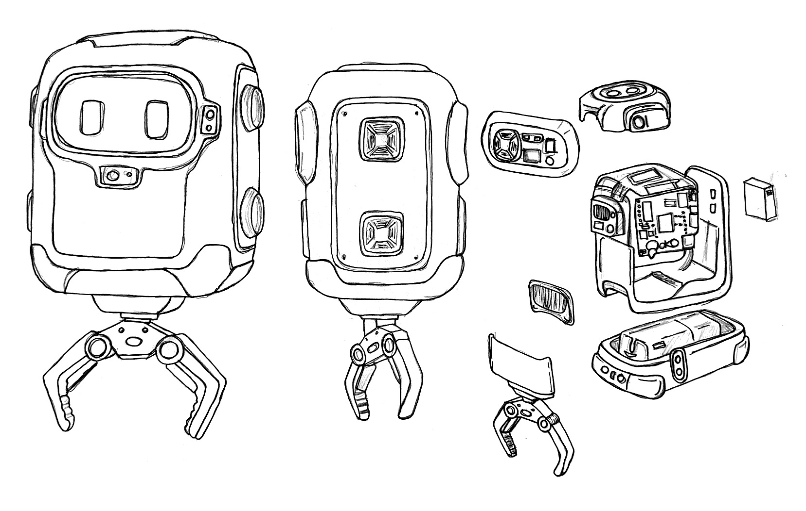
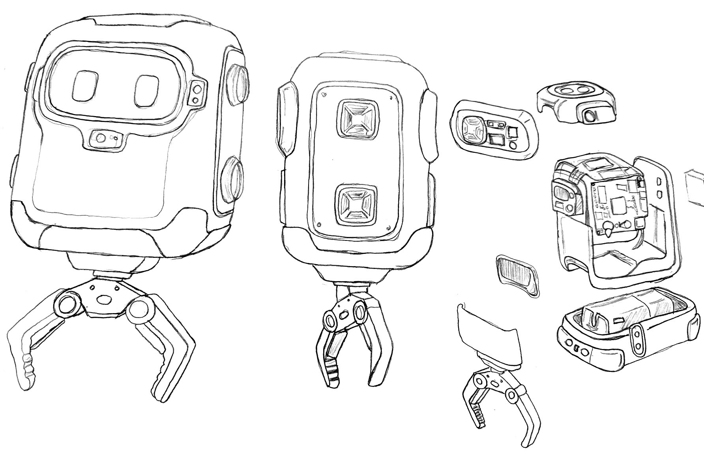
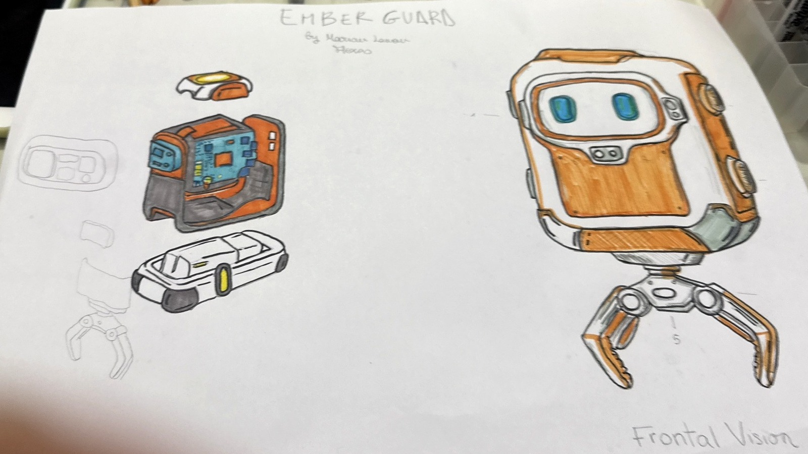
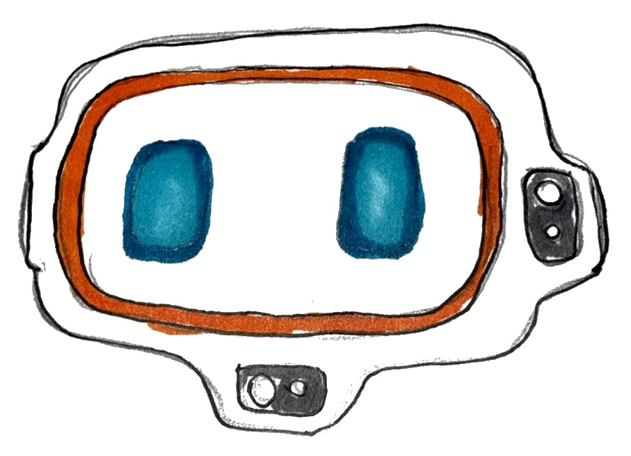
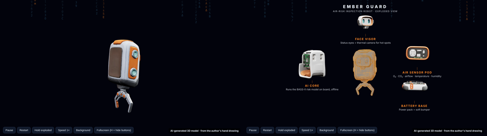

Ember Guard is a small free-flying cabin robot that watches the air when the crew cannot: while they are busy or asleep. It grips a handrail with its bottom gripper, switches its thrusters off, measures the air and estimates the fire risk with a model trained on 118 NASA BASS-II tests from the ISS. It estimates risk; it does not detect fires.
Drag to rotate. The parts separate and come back together, with labels. AI-generated 3D model made with Tripo3D from the author's hand drawings.
Designed by hand
The robot was designed on paper by the author, from the first pencil sketch to the final coloured sheet with front, back and exploded views.

Final coloured sheet: front, back and exploded views. Hand-drawn by the author

Ink version of the design sheet. Hand-drawn by the author

Pencil draft. Hand-drawn by the author

Colour marker drawing. Hand-drawn by the author

Face visor with the eyes and the infrared camera. Hand-drawn by the author

3D parts generated from the drawings. AI-generated 3D model (Tripo3D)
How a mission works
Fly to the module on quiet micro-thrusters, avoiding crew and equipment with a depth sensor.
Grip a handrail with the bottom gripper, so it stays still without thrusters.
Thrusters off and wait for the local air to settle.
Sniff and look: oxygen, CO₂, airflow, temperature and humidity, plus an infrared scan for surfaces that are warming up.
Estimate the risk that this air could sustain a flame, with an uncertainty band.
Warn and report with eye colour, voice and a live dashboard on the crew's laptop.
Act preventively if nobody answers: cut ventilation in that module. The crew can override at any time.
Why it switches its thrusters off. In microgravity there is no buoyancy, so air only moves when fans or vents push it. BASS-II showed that whether a flame survives depends strongly on very slow airflow, a few centimetres per second. A thruster jet would distort exactly the number the model depends on, so Ember holds on and goes silent before it measures.
Parts
Part
What it does
Face visor and eyes
Shows status: blue safe, orange alert, red danger. The infrared camera sits below the eyes.
Air sensor pod
Oxygen, CO₂, temperature and humidity.
Airflow sensor
Local air speed in cm/s, the key input of the risk model.
Depth sensor
Navigation and obstacle avoidance.
Micro-thrusters
Movement between modules, off while measuring.
Bottom gripper
Two-finger claw with soft pads that holds a handrail, to measure without thrusters or to stay next to an astronaut.
Onboard computer
Runs the risk model, the dashboard and a closed-domain voice chat, offline.
Speaker, memory card, battery and bumper
Voice alerts, stored reports, power and a soft edge to protect the crew.
Limits
It estimates the risk that a flame could be sustained; it does not detect or extinguish fires.
Valid only inside the tested ranges: O₂ 13.6–22.2 %, airflow 0.4–47 cm/s, about 1 atm, lab fuels.
The robot is a digital concept. No hardware was built; sizes and timings are not tested.